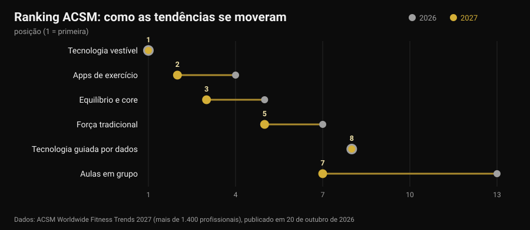
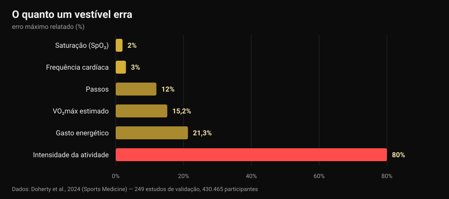

Tendências fitness 2027: o que funciona mesmo
A 20 de outubro o American College of Sports Medicine publicou a sua lista de tendências fitness para 2027 e numa semana estava em todos os sites do setor. Pela décima vez os dispositivos vestíveis lideram; as apps de exercício sobem do quarto para o segundo lugar. Nenhum dos artigos que li fez a pergunta seguinte: essas tendências funcionam? Fui procurar os números, e acontece que as ferramentas no topo da lista fazem uma coisa muito bem e outra muito mal — incluindo o dado que quase toda a gente olha primeiro.

Em resumo
- A lista não mede eficácia. É um inquérito a mais de 1.400 profissionais do setor sobre o que vai pesar mais em 2027, já na 21.ª edição. Diz para onde vai o mercado, não o que produz resultados.
- Os rastreadores fazem mexer mais, e isso é sólido. Uma revisão de 39 revisões sistemáticas (163.992 participantes) estima cerca de 1.800 passos a mais por dia, 40 minutos a mais de caminhada e cerca de 1 kg de peso a menos (Ferguson et al., 2022).
- As calorias do ecrã são o dado menos fiável. O erro no gasto energético vai de -21,3% a +14,8%, e na intensidade da atividade o erro médio chega aos 80% (Doherty et al., 2024).
- A frequência cardíaca, por outro lado, é boa. Viés médio ±3%. O VO₂máx estimado não: sobrestimado em 15,2% em repouso.
- "Guiado por dados" não quer dizer "melhor". Treinar seguindo a variabilidade cardíaca melhora os índices vagais (DMP 0,50) mas não melhora significativamente o desempenho (Manresa-Rocamora et al., 2021).
A lista 2027 em três linhas
Todos os anos o ACSM envia um questionário a profissionais de fitness de todo o mundo e pergunta que tendências terão mais peso nos doze meses seguintes. A edição 2027, assinada por Cayla R. McAvoy e pelo grupo de trabalho de tendências, reúne mais de 1.400 respostas. No topo:
- tecnologia vestível (primeiro lugar pela décima vez);
- apps de exercício (do quarto);
- equilíbrio, mobilidade e core (do quinto);
- programas para adultos mais velhos (no top cinco há cinco anos);
- treino de força tradicional (sobe dois lugares);
- exercício para gestão do peso;
- aulas de grupo (do décimo terceiro);
- tecnologia guiada por dados (mantém o oitavo);
- exercício para a saúde mental (no top dez há quatro anos);
- programas liderados por influenciadores e embaixadores (de volta depois de sair do top vinte).

O maior salto é o das aulas de grupo, seis lugares num ano. Mas o mais interessante está noutro sítio: das dez entradas, três são tecnologia e duas são treino clássico. É essa convivência que vale a pena olhar de perto, porque a investigação sobre as duas metades diz coisas muito diferentes.
Uma ressalva que falta em quase todas as notícias: um inquérito de opinião entre profissionais não é prova de eficácia. É um termómetro do mercado. Se em 2027 toda a gente vai vender dados, a pergunta a fazer é quão precisos são esses dados.
O que o relógio mede bem e o que estima
Aqui existe uma fonte quase perfeita: uma revisão "viva" publicada na Sports Medicine que juntou 24 revisões sistemáticas, 249 estudos de validação e 430.465 participantes, comparando os dispositivos de consumo com os padrões de referência de laboratório (Doherty et al., 2024).

Lido da esquerda para a direita, o gráfico conta uma hierarquia nítida.
Fiável. A frequência cardíaca tem um viés médio de 3%: mais do que suficiente para regular a intensidade de uma corrida ou de um circuito. Na deteção de arritmias os dispositivos mostram sensibilidade de 100% e especificidade de 95% — um dado notável, que continua a ser um sinal para levar ao médico, não um diagnóstico.
Aproximado mas útil. Os passos são normalmente subestimados, com erro percentual médio absoluto entre -9% e 12%. Traduzindo: se o relógio marca 8.000 passos, os teus estão entre cerca de 7.000 e 8.800. Para seguir uma tendência semanal serve bem; para tirar conclusões de um único dia, não.
Não serve para decidir. O gasto energético tem um erro entre -21,3% e +14,8%. Numa sessão que o ecrã estima em 600 kcal, o valor real pode estar entre 470 e 690. Pior ainda a intensidade da atividade, com erro médio de 29% a 80% conforme a exigência do que estás a fazer. O VO₂máx estimado é sobrestimado em 15,24% em repouso e 9,83% em esforço: se o relógio marca 52, o número plausível anda pelos 47.
E o sono? Os dispositivos tendem a sobrestimar o tempo total de sono, com erro tipicamente acima de 10%: na prática contam como sono períodos em que apenas estavas parado. Serve para ver se te deitaste mais tarde do que o habitual — que é precisamente o ponto quando se decide a que horas parar de tomar café — mas uma "pontuação do sono" não é uma medida clínica.
Um último dado põe tudo em perspetiva: de todos os dispositivos à venda, só cerca de 11% foram validados para pelo menos um parâmetro, e os estudos de validação feitos até agora são 3,5% dos necessários. Quando uma marca escreve "precisão clínica" na caixa, nove em cada dez vezes não existe trabalho publicado que o demonstre para aquele modelo.
O paradoxo: erram os números e funcionam na mesma
Chega aqui a parte que quase ninguém conta. Os mesmos dispositivos que estimam mal as calorias estão entre as ferramentas com mais evidência para pôr as pessoas em movimento.
A revisão guarda-chuva de Ferguson e colegas reuniu 39 revisões sistemáticas e meta-análises, com 163.992 participantes de todas as idades, em populações saudáveis e clínicas. Resultado: efeito pequeno a moderado na atividade física (DMP 0,3-0,6), composição corporal 0,7-2,0, aptidão 0,3. Em unidades concretas: cerca de 1.800 passos a mais por dia, 40 minutos a mais de caminhada por dia, cerca de 1 kg de peso a menos. Os efeitos na tensão arterial, colesterol, hemoglobina glicada, qualidade de vida e dor são pequenos e muitas vezes não significativos. Os autores concluem que a evidência basta para recomendar o uso.
Não é uma contradição: o dispositivo funciona como lembrete e espelho, não como instrumento de medida. Lembra-te de que existes, mostra-te uma tendência, dá-te um objetivo. Que a estimativa de calorias falhe 20% não muda nada nesse mecanismo — a não ser que construas a dieta sobre esse número, e aí sim torna-se um problema.
Nos adultos mais velhos, a quarta tendência da lista, os números batem certo: em 45 estudos e 7.144 participantes os rastreadores aumentam os passos (DMP 0,59) e a atividade moderada a vigorosa semanal (DMP 0,54) e reduzem o tempo sedentário (Wu et al., 2023). Mas o mesmo trabalho acrescenta o detalhe decisivo: os rastreadores combinados com componentes tradicionais — objetivos acordados, automonitorização, chamadas de seguimento — conseguem mais do que os rastreadores sozinhos.
Com as apps é a mesma história. Em 12 ensaios aleatorizados sobre apps de atividade física e gestão do peso, os efeitos em peso, IMC e percentagem de gordura eram pequenos a moderados, e as mais eficazes eram as que tinham lembretes, automonitorização e um treinador humano (Yen et al., 2022). É a mesma conclusão a que chegámos ao falar de se o coaching online funciona: a tecnologia multiplica uma relação, não a substitui.
"Guiado por dados": a VFC cumpre?
A oitava tendência, parada há um ano, é a tecnologia que lê sono e variabilidade da frequência cardíaca (VFC) para te dizer como treinar hoje. Promessa sedutora: o relógio sabe quando podes carregar.
As meta-análises são mais mornas. Na revisão metodológica de Manresa-Rocamora e colegas, treinar guiado pela VFC supera um programa predefinido nos índices vagais de VFC (DMP 0,50; IC 95% 0,09-0,91), mas não na frequência cardíaca de repouso, e as diferenças na capacidade aeróbia máxima (DMP 0,20; IC 95% -0,07-0,47) e no desempenho de resistência (DMP 0,20; IC 95% -0,09-0,48) são pequenas e não significativas. Uma segunda meta-análise, só com atletas de resistência, encontra um efeito pequeno mas positivo no VO₂máx (TE 0,402), mais marcado em amadores e em mulheres (Granero-Gallegos et al., 2020).
A leitura honesta é esta: a VFC parece reduzir a probabilidade de respostas negativas ao treino — menos sessões mal feitas no momento errado — mais do que levantar o teto dos resultados. Se te serve para decidir quando tirar uma série, faz sentido. Se a usas para saber se hoje "podes" agachar, estás a delegar a um dado de quinze segundos uma decisão que tu tomas melhor.
A tendência que 2027 subestima
No sexto lugar está o exercício para gestão do peso, e o ACSM nota que com os fármacos para emagrecer cada vez mais difundidos a atenção passa a ser manter o músculo. Aqui há um dado que convém deixar escrito, porque diz respeito a qualquer pessoa que perca peso depressa: uma meta-análise com meta-regressão sobre treino de força em défice calórico mostra que os ganhos de massa magra ficam comprometidos (TE -0,57; p = 0,02) enquanto os de força se mantêm comparáveis (TE -0,31; p = 0,28), e que acima de um défice de cerca de 500 kcal por dia a massa magra deixa de crescer (Murphy e Koehler, 2021).
Significa que quem perde peso depressa mantém a força mas não constrói músculo, e que o treino contra resistência nessa fase serve para defender o que já existe. Como se organiza na prática vimos ao falar de recomposição corporal. Se estás a tomar fármacos para o peso, a dieta e o treino discutem-se com o médico que os prescreveu: aqui falamos de dados, não de protocolos pessoais.
O que a investigação diz mesmo
"os vestíveis fazem mexer mais". Cerca de 1.800 passos e 40 minutos a mais de caminhada por dia, benefício mantido ao longo do tempo, em 163.992 participantes.
"a frequência cardíaca no pulso dá para usar". Viés médio de 3%, suficiente para regular a intensidade.
"as calorias do relógio são um dado". Erro de -21,3% a +14,8%, e até 80% na intensidade da atividade.
"o VO₂máx do relógio é uma medida". Sobrestimado em 15,24% em repouso e 9,83% em esforço.
"a pontuação do sono diz como dormiste". A duração total é sobrestimada, normalmente acima de 10%: útil para tendências, não como medida.
"treinar guiado pela VFC dá melhores resultados". Melhora os índices vagais, mas o efeito no VO₂máx e no desempenho é pequeno e não significativo.
"com uma boa app não é preciso treinador". As apps e rastreadores mais eficazes são os que têm lembretes, objetivos e contacto humano.
"a lista ACSM diz o que funciona". É um inquérito de opinião entre profissionais: mede expectativas de mercado.
Como aplicar
- Usa o relógio para tendências, não para valores absolutos. Passos, frequência cardíaca e minutos ativos comparados com a tua média de quatro semanas valem muito mais do que o mesmo número lido uma vez.
- Não construas a dieta sobre as calorias do ecrã. Com um erro potencial de 20% nos dois sentidos, usa como referência o peso corporal e as medidas ao longo do tempo, não o gasto estimado.
- Uma decisão por dado. Um dado que não muda nada é ruído: se a pontuação de recuperação nunca te faz tirar nem acrescentar nada, deixa de olhar para ela.
- Para a força mede a carga, não as calorias. Séries, repetições, carga e RIR (repetições em reserva) são os parâmetros em que se constrói a progressão: nenhum relógio os regista por ti.
- Se usas a VFC, usa-a para tirar. Faz sentido como travão nos dias maus, não como autorização nos dias bons.
- Acrescenta a parte humana. O dado que chega a uma pessoa — um treinador, um amigo, um grupo — funciona melhor do que o dado que fica na app. É a diferença que se vê nas meta-análises.
- Desconfia do "precisão clínica" da caixa. Só 11% dos dispositivos estão validados para pelo menos um parâmetro: pergunta para qual, e em que estudo.
Experimenta a Nurvan — os dados que o teu relógio não regista
O smartwatch sabe quanto caminhaste. Não sabe que ontem fechaste o supino a 4 repetições da falha e hoje a 2, que é a única informação que mostra se estás a progredir. Na Nurvan registas carga, repetições e RIR de cada série, importas o plano que já tens a partir de PDF, Excel ou foto, e tens a curva de cargas mês a mês ao lado de medidas e peso; as séries de aquecimento são propostas automaticamente a partir da carga do dia. E se tens um treinador a acompanhar, ele vê os mesmos ecrãs que tu: a parte humana que faz a diferença nas meta-análises.
Perguntas frequentes
Quais são as tendências fitness de 2027?
Segundo o inquérito ACSM publicado a 20 de outubro de 2026, por ordem: tecnologia vestível, apps de exercício, equilíbrio e core, programas para adultos mais velhos, força tradicional, exercício para gestão do peso, aulas de grupo, tecnologia guiada por dados, exercício para a saúde mental e programas liderados por influenciadores. É um inquérito a mais de 1.400 profissionais sobre expectativas para o ano, não uma lista de eficácia.
Qual é a precisão das calorias do smartwatch?
Baixa. A revisão de 249 estudos de validação reporta erro no gasto energético entre -21,3% e +14,8%, e erro médio de 29% a 80% na estimativa da intensidade. A frequência cardíaca, pelo contrário, tem viés médio de 3%: é o parâmetro em que esses dispositivos são mais fiáveis.
Vale a pena comprar uma pulseira de atividade?
Se o teu problema é mexer-te mais, a evidência está a favor: em média cerca de 1.800 passos e 40 minutos a mais de caminhada por dia, com cerca de 1 kg de peso a menos, e o benefício mantém-se. Se o teu problema é saber quantas calorias gastaste ou quanto vale o teu VO₂máx, o dispositivo não é a ferramenta certa.
Devo treinar de acordo com a VFC?
As meta-análises mostram melhoria dos índices de variabilidade cardíaca mas efeitos pequenos e não significativos na capacidade aeróbia e no desempenho. Como ferramenta para evitar sessões feitas na altura errada pode fazer sentido; como árbitro de cada treino, não.
Lê também
- O coaching online funciona? O que dizem os estudos — o que muda mesmo quando há uma pessoa do outro lado dos dados.
- Recomposição corporal: perder gordura e ganhar músculo — como montar um défice que não te custa massa magra.
- Cafeína e sono: a que horas parar de tomar café — a outra metade da recuperação, com números.
Fontes
- Ferguson T, Olds T, Curtis R, Blake H, Crozier AJ, Dankiw K, Dumuid D, Kasai D, O'Connor E, Virgara R, Maher C, 2022. Effectiveness of wearable activity trackers to increase physical activity and improve health: a systematic review of systematic reviews and meta-analyses. The Lancet Digital Health 4(8):e615-e626. PMID 35868813 · DOI 10.1016/S2589-7500(22)00111-X00111-X)
- Doherty C, Baldwin M, Keogh A, Caulfield B, Argent R, 2024. Keeping Pace with Wearables: A Living Umbrella Review of Systematic Reviews Evaluating the Accuracy of Consumer Wearable Technologies in Health Measurement. Sports Medicine 54(11):2907-2926. PMID 39080098 · DOI 10.1007/s40279-024-02077-2
- Wu S, Li G, Du L, Chen S, Zhang X, He Q, 2023. The effectiveness of wearable activity trackers for increasing physical activity and reducing sedentary time in older adults: A systematic review and meta-analysis. Digital Health 9:20552076231176705. PMID 37252261 · DOI 10.1177/20552076231176705
- Yen HY, Jin G, Chiu HL, 2022. Smartphone app-based interventions targeting physical activity for weight management: A meta-analysis of randomized controlled trials. International Journal of Nursing Studies 137:104384. PMID 36379104 · DOI 10.1016/j.ijnurstu.2022.104384
- Manresa-Rocamora A, Sarabia JM, Javaloyes A, Flatt AA, Moya-Ramón M, 2021. Heart Rate Variability-Guided Training for Enhancing Cardiac-Vagal Modulation, Aerobic Fitness, and Endurance Performance: A Methodological Systematic Review with Meta-Analysis. International Journal of Environmental Research and Public Health 18(19):10299. PMID 34639599 · DOI 10.3390/ijerph181910299
- Granero-Gallegos A, González-Quílez A, Plews D, Carrasco-Poyatos M, 2020. HRV-Based Training for Improving VO2max in Endurance Athletes. A Systematic Review with Meta-Analysis. International Journal of Environmental Research and Public Health 17(21):7999. PMID 33143175 · DOI 10.3390/ijerph17217999
- Murphy C, Koehler K, 2021. Energy deficiency impairs resistance training gains in lean mass but not strength: A meta-analysis and meta-regression. Scandinavian Journal of Medicine & Science in Sports 32(1):125-137. PMID 34623696 · DOI 10.1111/sms.14075
- McAvoy CR et al., 2026. 2027 ACSM Worldwide Fitness Trends: Future Directions of the Health and Fitness Industry. ACSM's Health & Fitness Journal 30(6), novembro/dezembro de 2026. DOI 10.1249/fit.0000000000001208 · comunicado ACSM
Referências bibliográficas obtidas através da PubMed. Ponto de partida: nenhuma publicação nas redes, mas o sinal de tendência de 20-26 de outubro de 2026, ou seja a publicação do inquérito ACSM Worldwide Fitness Trends 2027 e a sua repercussão na Medical Xpress, Athletech News e Yahoo Lifestyle, a par do aumento das pesquisas sobre dispositivos vestíveis em outubro de 2026. O tema foi escrito de raiz a partir das fontes primárias.
Giammaria Loi é o fundador da Nurvan. Treina com pesos desde 2012, trabalha como personal trainer e coach certificado FIPE desde 2013 e compete em powerlifting a nível nacional desde 2018. Cada artigo que assina parte dos estudos científicos e chega ao que funciona mesmo no ginásio.
Nota: conteúdo informativo, não substitui a opinião de um médico ou de um profissional. Os dados sobre sono, saturação e arritmias aqui referidos dizem respeito à precisão de medida dos dispositivos, não ao seu uso diagnóstico: um valor anómalo leva-se a um médico, não se interpreta com uma app. Se estás a tomar fármacos para o peso, fala com quem os prescreveu antes de alterar dieta ou treino.